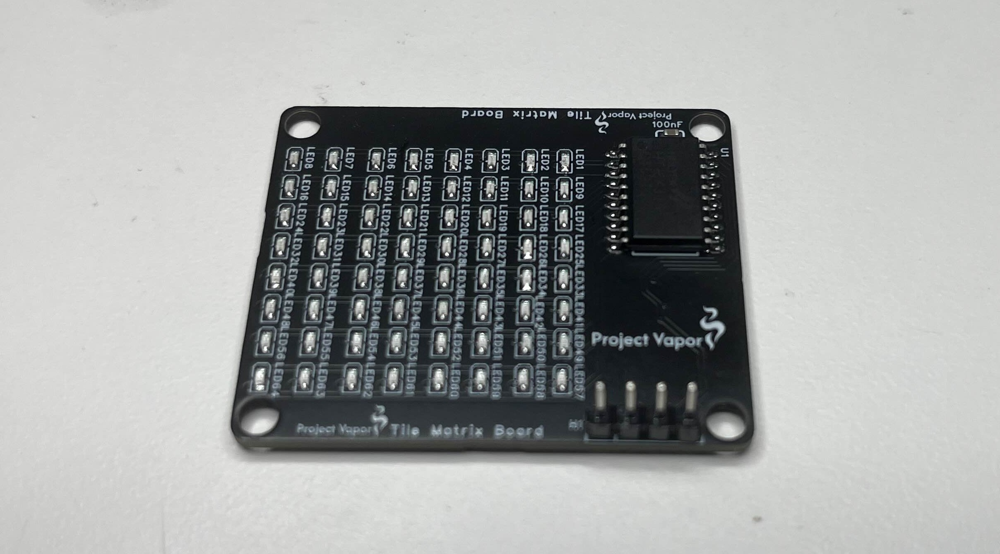

Thank you for attending the PK Industries 1st annual shareholder meeting. This year has not only marked the start of the company, but has also created many successful projects. We hope this update recaps the year, and lays out a road map for future updates to the company.
Quarter 1 had slow progression, but steady growth. We focused heavily on basic electronics and Arduino development. The desktop clock project was shipped, but served as a proof of concept more than anything as was later taken apart for parts.
There was more development on this time. Version 2 of the clock project was started, and we designed and printed an overhead saw combat robot (just the shell). This season was cut short by school and the world robotics championship we attended.
Quarter 3 started to ramp things up. The PDAV 1, 2 were completed and the PDAV 3 was assembled without code. The DM atlas was designed and assembled with our first ever custom circuit board. The digital name tag was finished. We also collaborated with Strange Computing (my friends fake company) to design Project VAPOR. Custom led matrix tiles were ordered at the end of August. This time also marks the start of PK Industries.
Quarter 4 continued the momentum from Q3. We assembled the matrix tiles from earlier. The Cyber Watch 32 was designed and assembled. Code for the PDAV 3 was started. More coding projects were also made, featuring a terminal based gravity sim and an OpenGL tutorial. The PK Industries website was created. The ZoomVGA board was designed and received. The year closed out with the Moonbeam Synthesizer. This was our largest project ever featuring a fully custom board and synthesizer engine.

As we go into the coming year we want to make some improvements to the way the company is run. The biggest change is that we are letting go of ChatGPT on the software team. He will no longer be working for the company in any capacity.
We also want to change our product schedule. We will test out in Q1 a 1 month hardware phase, a 1 month software phase, and a 1 month cleanup phase for any project.
We are excited to go into 2026 and bring many more products to market. Thank you for being a part of this journey with us.